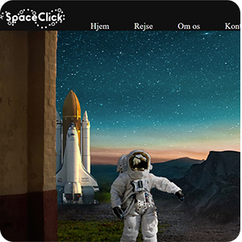
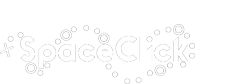
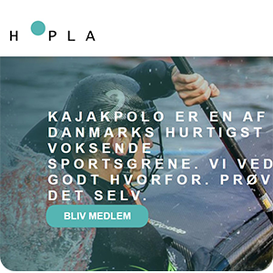
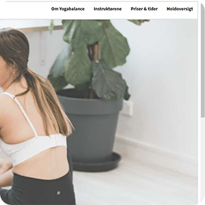
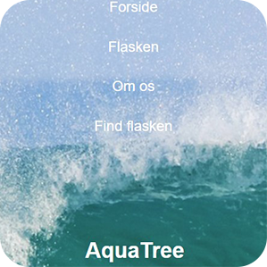
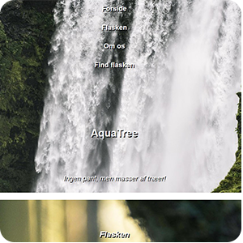

De nedenstående projekter har jeg været med til at udarbejde på 1. semester i gruppearbejde, på Multimediedesigner uddannelsen i Zealand køge | Alle billederne er links til projekter.
I mit første projekt på 1. semester skulle vi udarbejde et Rumrejse koncept, samt lave en tilhørende hjemmeside i HTML og CSS, som produkt, som kan ses ovenfor. | I dette projekt lavede jeg logoet i photoshop, til vores hjemmeside SpaceClick, som kan ses her.
I mit andet projekt efter Rumrejsen skulle vi lave en hjemmeside for et fiktivt firma ved navn HOPLA, som var indehaver af en masse forskellige sportsgrene. Vores gruppe skulle udarbejde en hjemmeside om sportsgrenen Kajak Polo, som vi blev tildelt. I dette projekt udarbejdede jeg undersiden “Tilmeld” til hjemmesiden samt indholdet på siden. Fik også udarbejdet en tilmeldingsknap samt en fiktiv Sportskalender lavet i photoshop til undersiden.
I mit trejde projekt efter Kajak Polo projektet skulle jeg producere et videoportræt af en holdkammerat, som jeg blev tildelt i første lektion. Der var ingen krav til, hvordan opgaven skulle gribes an ren genremæssigt, men der var forventet en seriøs og reflekteret tilgang til præsentationen. Udover visuelle hensyntagen, skulle der være taget stilling til god og seriøs lys.
I mit fjerde projekt efter potræt video projektet, skulle vi overtage en anden gruppes sportsgren hjemmeside fra Kayak Polo projektet. Vi overtog en side der omhandlede Ashtanga Yoga, hvor vi skulle optimere den gennem brugertest og feedback. I dette projekt stod jeg for indholdet af siden “Om Yogabalance” og ellers arbejdede jeg mest med Usabilitytestene i projektet.
I mit femte projekt efter Ashtanga Yoga projektet, skulle vi udarbejde et vandflaske koncept med en salgsplatform og en mobile-only hjemmeside som produkt. I dette projekt fik vi udarbejdet et vandflaske koncept ved navn AquaTree og en one-page-scroller, mobil-only hjemmeside. Jeg stod for indholdet af sidens indhold under “Om Flasken”, samt siden footer indhold, med kontaktinformation og sociale medier ikoner.
I mit femte projekt, som var en del 2 af Vandflaske projektet, skulle vi bruge den feedback vi fik fra det første til at optimere vores koncept m.m., samt udarbejde vores hjemmeside fra mobil-only til at virke på desktop også. I dette projekt stod jeg for opsætningen og det meste af brugen af programmet Git, som var et krav at bruge under arbejdet af kodningen af vores side.